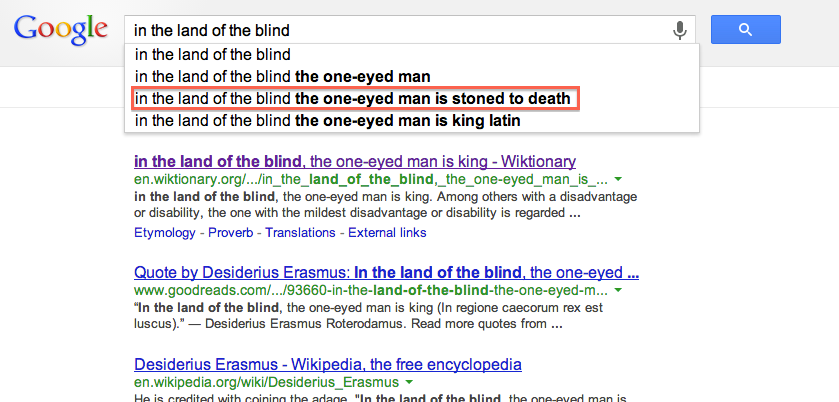
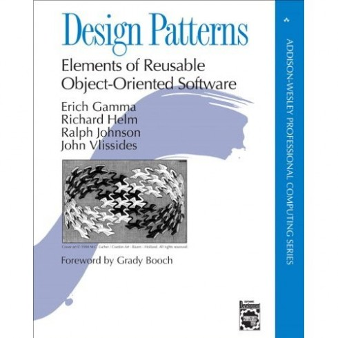

We Like to Software
a talk by Hawk Newton <hnewton@constantcontact.com>We write software because we like to write software

We hone our craft

I think sometimes we over do it

Clever software engineering
Being clever isn’t always the same as being smart
IE's SSL Chain Vulnerability
Based on a talk by Moxie Marlinspike at Black Hat DC 2009Some background

SSL validation algorithm
Starting at the leaf node:
- Make sure the leaf node matches the site in the address bar
- Check the signature and expiration date of the current node
-
Is the current node a trusted CA cert on this machine?
- Yes, the cert is golden
- Nope, start the process over again with this node parent
Ripe for recursion
"I got to use recursion today!"

-- Some Clever Software Engineer
The exploit

The details
- This was way back in '02
- Many SSL stacks were vulnerable including IE, OpenSSL, Konqueror, and others
- A working exploit was published by Moxie Marlinspike
- The fix involves honoring a field that disallows a cert signing other certs
"Debugging is twice as hard as writing the code in the first place. Therefore, if you write the code as cleverly as possible, you are, by definition, not smart enough to debug it."

- Brian Kernighan
The Moral
When you pat yourself on the back for being clever, make sure you've not just made a horrible mistake
Premature Optimization
Perfect is the enemy of good enough
- François-Marie Arouet (1694-1778)
Instead of this:
String[] result = new String[3];
result[0] = callService1();
result[1] = callService2();
result[2] = callService3();
This:
Future<String> future1 = execCallable(new Callable<String>() {
public String call() throws Exception {
callService1();
}
});
// repeat two more times...
String[] result = { future1.get(), future2.get(), future3.get() };
CancellationException, ExecutionException, InterruptedException
Unnecessary Caches
a special place
- Cluster synchronization
- Stale data
- Computational overhead
- Memory footprint
- Operational overhead
Often times, a cache is implemented that isn't strictly necessary
Don't fix a problem you don't have
if(map.hasKey(key)) {
// Do stuff without a value
doStuffWithoutValue();
} else {
// Do stuff with value
doStuffWithValue(map.get(key));
}
Measure, Optimize, Iterate

In the land of the blind the one-eyed man is king
- Desiderius Erasmus (1500)
Misunderstood or outdated best practices
The road to hell is paved with the best intentions
Gang of Four
- Still largely useful and relevent almost 20 years after it's initial publication
- Came out before refactoring IDEs and TDD became popular
- Advocates coding to an interface as opposed to an implementation
The Factory Pattern
Arguably, the most-used and least-understood of all GOF patterns
org.w3c.dom.*
I sure am glad that came along!
The Open/Closed Principal (OCP)
States that a design/implementation should be open for extension yet closed for change
/rant
Unchallenged requirements
"I was just following orders"
In today's agile world it is imperative that we constantly ask "Why?"
large-scale hierarchical site management
- Thousands of dynamic websites
- Business mandated 1.5 second max load time
- Massively complex caching infrastructure to avoid per-site initial 5 second load time
Polishing Cannonballs
The fox and the cat
Beware of unnecessary complexity masquerading as conventional wisdom